Slagboom of free flow-portaal: je telefoon noemt het bedrag op het moment dat je passeert. Je ogen blijven op de weg.
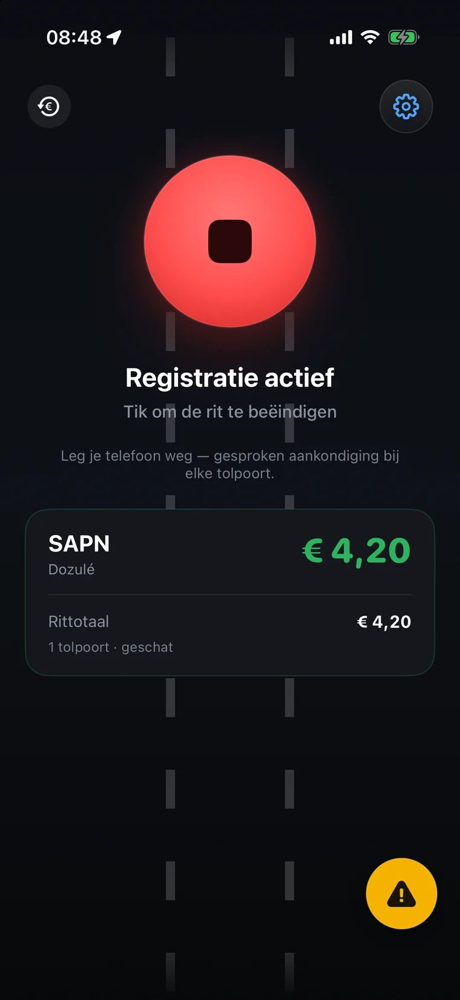
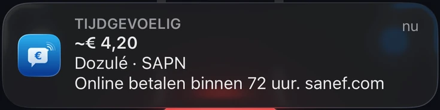
Laura Tenoudji besprak Péage Notif in haar weekendrubriek op de Franse radiozender Europe 1, nadat ze de app al de rubriek “La startup” van haar nieuwsbrief had gegeven.
Je start hem, je rijdt, en hij houdt je op de hoogte.
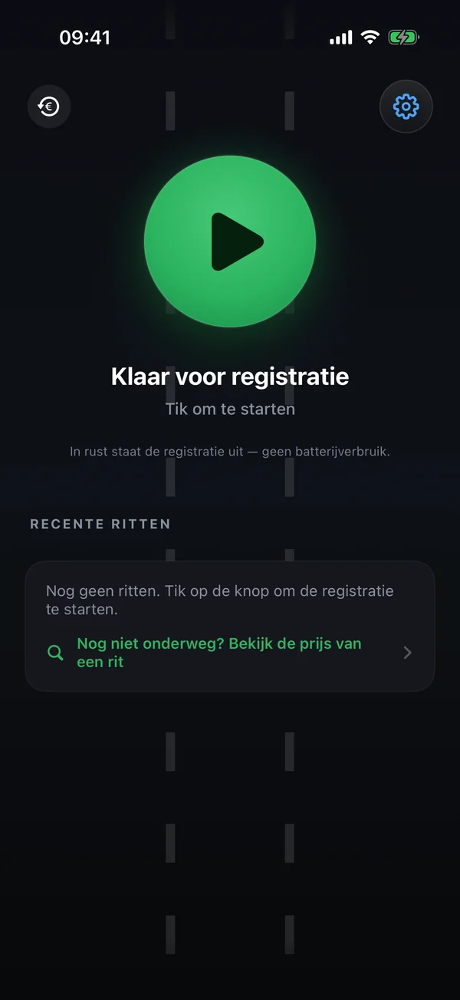
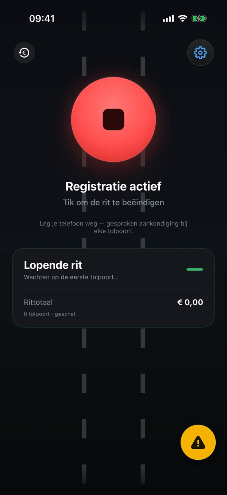
Met CarPlay kan het volgen zelfs vanzelf starten.
Op de A13, de A14 en de A79, rond Milaan, bij Dartford, op de M50 rond Dublin of in Portugal hebben tolportalen de slagbomen vervangen: dat is tol zonder poortjes, ook wel free flow genoemd. Zonder tolbadge: hoe weet je of je tol moet betalen, hoeveel en vóór wanneer? Péage Notif zegt het je bij het passeren.
Je rijdt onder het tolportaal door zonder te stoppen. Met een tolbadge wordt de tol vanzelf afgeschreven.
Zonder badge betaal je de tol achteraf online: 72 uur in Frankrijk, een termijn die per land verschilt.
In Frankrijk komt er met de betalingsbrief € 10 bij als je binnen 15 dagen betaalt, daarna € 90. Reageer je niet binnen twee maanden, dan wordt de boete € 375.
Het bedrag verschijnt in beeld en wordt hardop omgeroepen, met de betaaltermijn: Tolpoort Dozulé, 4 euro 20. Online betalen binnen 72 uur.
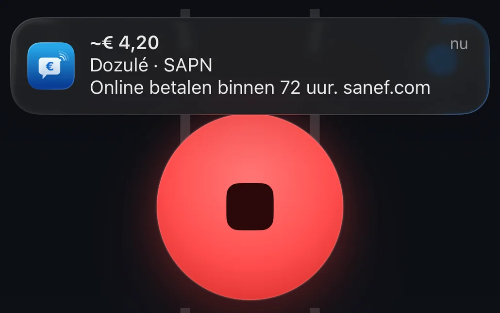
Aan het einde van de rit hoor je het bedrag en de uiterste datum. Het ritoverzicht opent met één tik de officiële website van de exploitant, met de stappen die je moet volgen.
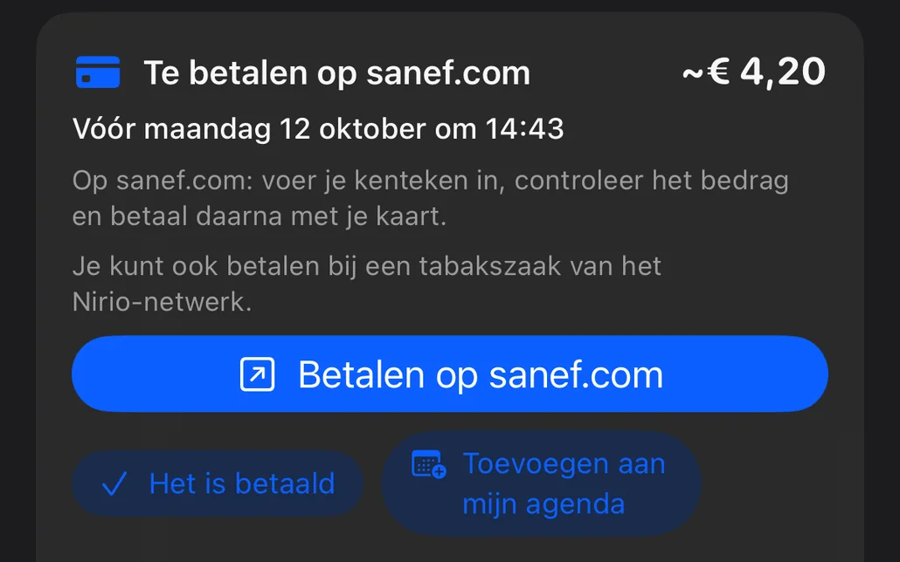
Een herinnering de volgende dag, nog een kort voor de uiterste datum, altijd tussen 9.00 en 21.00 uur. Eén tik op “Het is betaald” en de app begint er niet meer over.
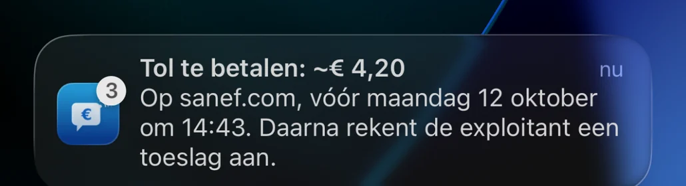
De app biedt je de afspraak al ingevuld aan, met een melding: één tik en hij staat erin. Hij komt tussen je andere afspraken te staan, in de agenda die je al gebruikt (Apple Agenda, Google Agenda…), met de link naar de betaalsite. Daarvoor heeft de app geen toegang tot je agenda nodig.
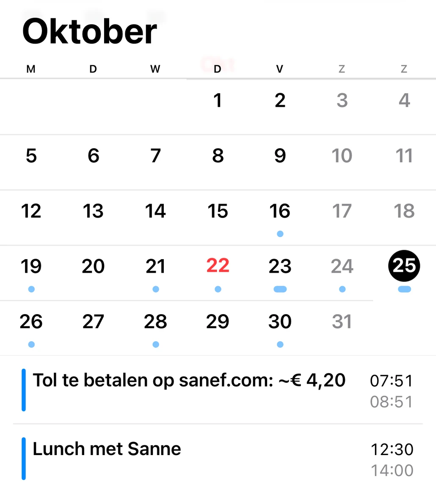
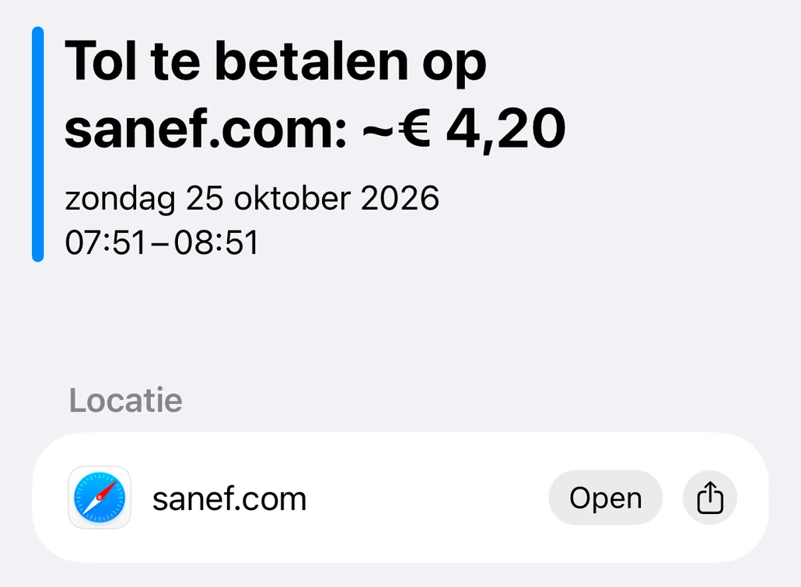
| Waar | Termijn | Waar betalen |
|---|---|---|
| Frankrijk | ||
| A13 en A14, tussen Parijs en Caen | 72 uur | sanef.com, of bij een tabakszaak van het Nirio-netwerk |
| A4, afrit 36 (Boulay-Moselle) | 72 uur | sanef.com, of bij een tabakszaak van het Nirio-netwerk |
| A79, tussen Montmarault en Digoin | 72 uur | paiement.aliae.com, of bij een betaalzuil langs de snelweg |
| Italië | ||
| Pedemontana, ten noorden van Milaan | 15 dagen | apl.pedemontana.com |
| Corda Molle, bij Brescia | 15 dagen | autoviapadana.it, of de app van de exploitant |
| Verenigd Koninkrijk | ||
| Dartford, ten oosten van Londen | Vóór middernacht de volgende dag | gov.uk |
| Merseybruggen, in Liverpool | Vóór middernacht de volgende dag | merseyflow.co.uk |
| Tynetunnels, in Newcastle | Vóór middernacht de volgende dag | tt2.co.uk |
| Blackwall- en Silvertowntunnel, in Londen | 3 dagen | tfl.gov.uk |
| Ierland | ||
| M50, rond Dublin | Vóór 20.00 uur de volgende dag | eflow.ie |
| Nederland | ||
| Blankenburgverbinding (A24), bij Rotterdam | 72 uur | e-tol.nl |
| Portugal | ||
| Elektronische tolportalen | Aanmelden vóór de passage | pttolls.com, anders zodra de passage op het officiële portaal verschijnt |
| Spanje | ||
| AP-636, Gipuzkoa | Aanmelden vóór de passage | bidegi.eus |
Na de termijn rekent de exploitant een toeslag aan. In Noorwegen en Zweden hoef je niets te doen: de factuur komt vanzelf, en de app vermeldt dat in het ritoverzicht. Termijnen overgenomen van de officiële websites van de exploitanten.
Dan wordt de tol vanzelf afgeschreven. Geef het één keer aan in de instellingen: de app heeft het dan niet meer over betalen.
Péage Notif vraagt je nooit om te betalen en verstuurt geen sms. Je betaalt uitsluitend op de officiële website van de exploitant, de website die de app je aangeeft.
De prijs verschijnt groot in beeld, precies op het moment dat je passeert, met de rit en het netwerk in kwestie.
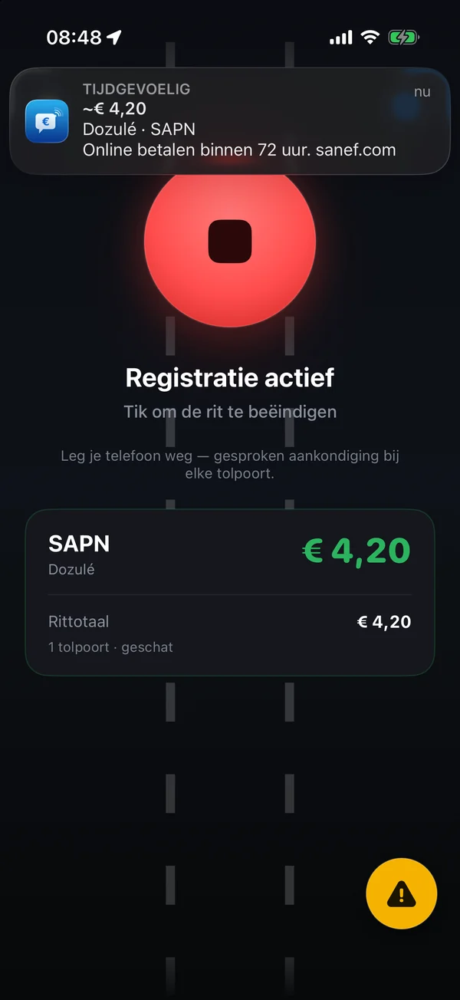
Een Live Activity volgt het totaal dat bij elke tolpoort oploopt: op het toegangsscherm, in het Dynamic Island en in CarPlay.
Auto, camper, vrachtwagen of motor: stel je klasse één keer in en de app meldt het tarief dat bij je past. De officiële tarieven zitten in de app, dus hij werkt zelfs zonder netwerk.
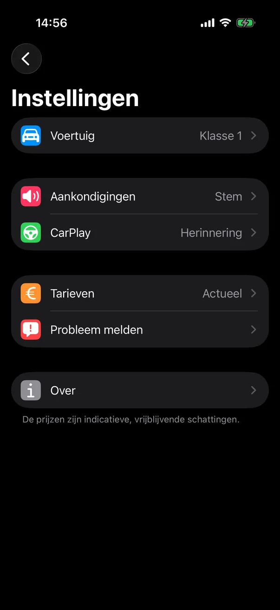
Snelwegen, tunnels, bruggen en tolportalen met free flow in 18 landen: elk punt op de kaart is een tolpoort die Péage Notif bij het passeren herkent. Alles zit in de app, onderweg wordt er niets gedownload.
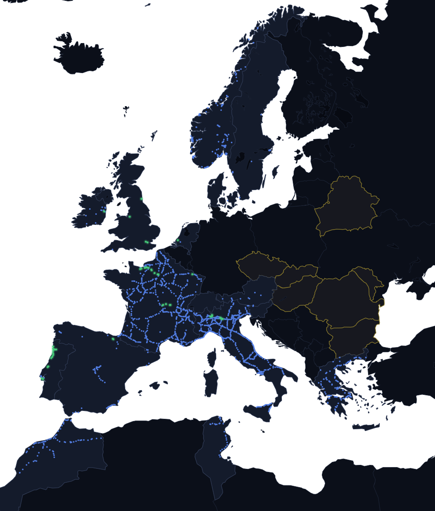
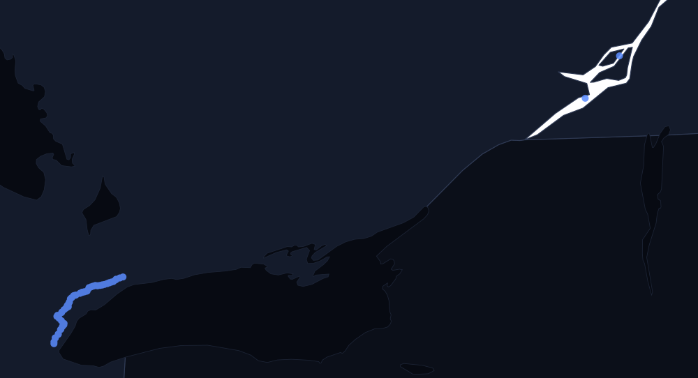
Als je Zwitserland, Oostenrijk, Slovenië, Tsjechië, Slowakije, Hongarije, Roemenië, Bulgarije, Moldavië of Belarus binnenrijdt, herinnert de app je eraan dat het vignet verplicht is en waar je het koopt.
Zwitserse frank, Brits pond, kronen, dirham, dinar of Canadese dollar: het bedrag verschijnt in de valuta van het land, met de tegenwaarde in euro als de Europese Centrale Bank er een koers voor publiceert.
De app spreekt dertien talen en houdt de jouwe aan, aan beide kanten van de grens. De namen van de tolstations blijven die van de borden.
Dezelfde app, dezelfde toldatabase, dezelfde prijs bij het passeren. Beschikbaar op Google Play.
De tol van 18 landen, de gesproken aankondiging, het rittotaal en het overzicht aan het einde van de rit. In dertien talen.
Zodra je telefoon via Bluetooth verbinding maakt met de auto, stelt Péage Notif voor om de registratie te starten. Eén tik en je kunt gaan.
De prijs wordt omgeroepen via het geluidssysteem van de auto, over je muziek of navigatie heen. Nog steeds zonder account, zonder reclame en offline.
Elke melding die je onderweg verstuurt, wordt naast de officiële tarievenlijsten gelegd. In de laatste versies onder meer:
Bij het passeren van een tolpoort wordt de gesproken aankondiging niet meer overstemd door het meldingsgeluid. Staat de stem uit, dan komt het geluid terug: nooit een tolpoort in stilte.
De app spreekt dertien talen, en het ritoverzicht vermeldt de datum van de tarieven van elk land dat je doorkruist.
Slagbomen die je langzaam nadert, grote tolpleinen en naburige tolstations worden beter herkend, en het juiste tarief verschijnt in beide richtingen.
Dezelfde schermen als in de App Store: de prijs in de hoofdrol, de rest als bijzaak.
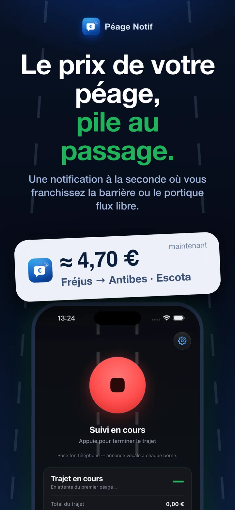
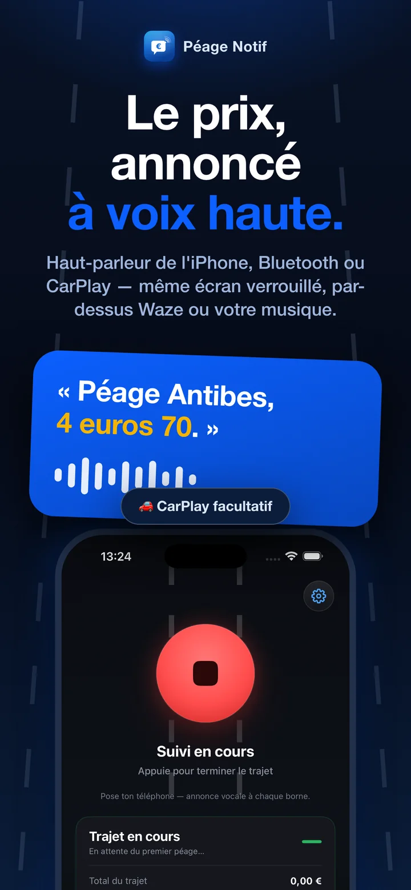
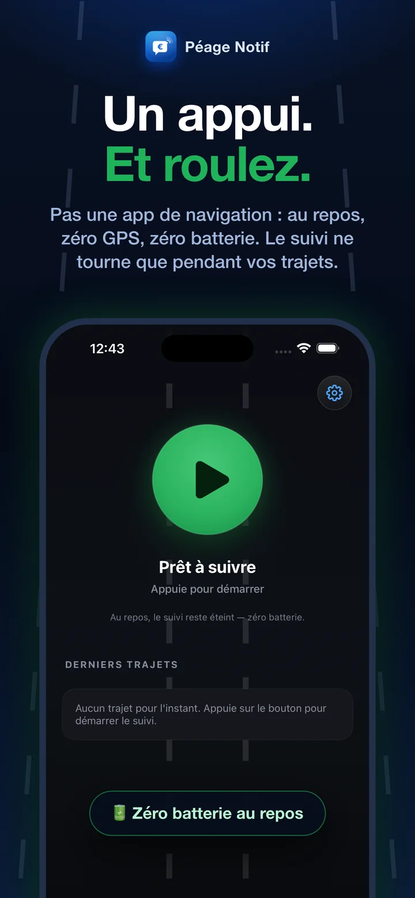
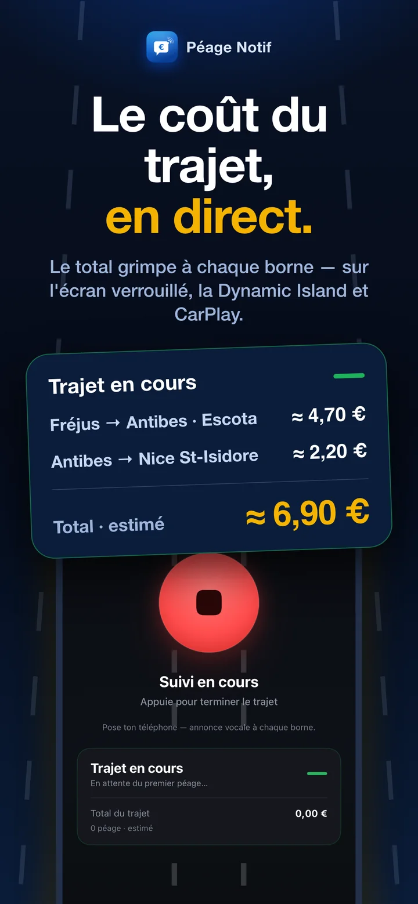
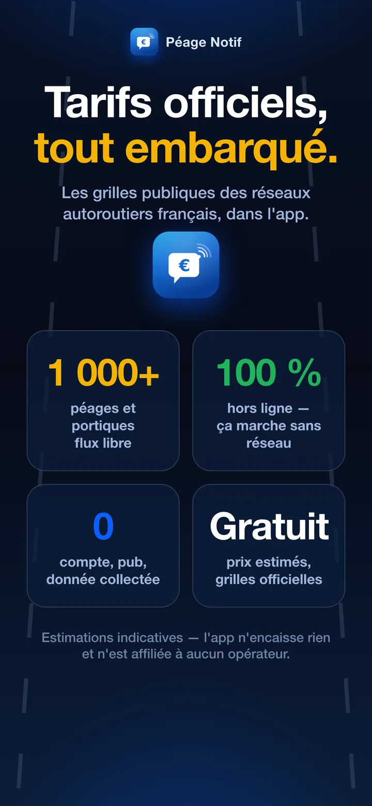
Het model van Péage Notif past in twee woorden: geen account, offline.
Mail ons op support@peagenotif.fr of meld een fout rechtstreeks vanuit de app (Instellingen › Probleem melden).
Op iPhone, via de App Store, en op Android, via Google Play. Het is op beide dezelfde app: de prijs van elke tolpost hardop genoemd bij het passeren, de termijn, de herinnering en de agenda voor free flow, en het overzicht aan het eind van de rit.
Ja, helemaal gratis en zonder abonnement. Je hebt geen account nodig.
Het zijn schattingen op basis van de officiële tarievenlijsten (standaard klasse 1, aan te passen in de instellingen). Ze zijn niet bindend: alleen het bedrag dat je tolbadge-aanbieder of de snelwegmaatschappij in rekening brengt, is doorslaggevend.
Bij het passeren leest Péage Notif de prijs hardop voor en toont hem, voor de klasse van je voertuig. Voor vertrek geeft de knop ‘Prijs van een rit’ in de app het tarief tussen twee tolstations, en deze site toont de tarieven van elk tolstation.
Nee. Péage Notif staat los van elke aanbieder en int zelf geen tol. De app laat je de geschatte prijs bij het passeren weten. Op snelwegen met free flow (A13, A14, A79…) betaal je zonder tolbadge achteraf online: de app herinnert je aan het bedrag en de uiterste datum.
De GPS draait alleen tijdens een registratie die je zelf hebt gestart. In rust verbruikt de app niets, en als je stilstaat, gaat de GPS trager. Vergeet je bij aankomst de registratie te stoppen, dan vraagt de app of de rit voorbij is.
Tik tijdens de rit op de meldknop en zeg wat er mis is. Achteraf kan het via Instellingen › Probleem melden, of mail naar support@peagenotif.fr. Deze meldingen worden direct gebruikt om de toldatabase te corrigeren.
In 18 landen: Frankrijk en Italië op al hun tolsnelwegen, dertien andere Europese landen, Marokko, Tunesië en Canada (Ontario en Quebec). De dekkingskaart toont elke tolpoort die de app herkent.
Zonder slagboom houdt niets je tegen bij het passeren. Péage Notif meldt elk tolportaal dat je passeert met het bedrag en de uiterste datum, en zet het daarna in het ritoverzicht, met uitleg over het betalen. Met een tolbadge hoef je niets te doen: de tol wordt automatisch afgeschreven.
Met een tolbadge hoef je niets te doen: de passage wordt vanzelf afgeschreven. Zonder tolbadge betaal je online op de officiële website van de exploitant, met je kenteken: sanef.com voor de A13, de A14 en afrit 36 van de A4, paiement.aliae.com voor de A79, binnen 72 uur. Péage Notif meldt het bedrag bij het passeren van het tolportaal, herinnert je aan de uiterste datum en opent met één tik de juiste website. De prijs van elk tolportaal staat in onze gids over tol in Frankrijk zonder poortjes.
In Frankrijk komt na 72 uur een betalingsbrief per post: de tol plus € 10 als je binnen 15 dagen betaalt, daarna plus € 90. Betaal of betwist je niet binnen twee maanden, dan wordt de verhoogde boete € 375. Alles staat uitgelegd in onze gids over boetes en nep-sms'jes.
Nee. Péage Notif vraagt je nooit om te betalen en verstuurt geen sms of e-mail. Er circuleren frauduleuze sms'jes van dit soort: tik niet op de link erin. Tol met free flow betaal je uitsluitend op de officiële website van de exploitant, bijvoorbeeld sanef.com voor de A13 en de A14.